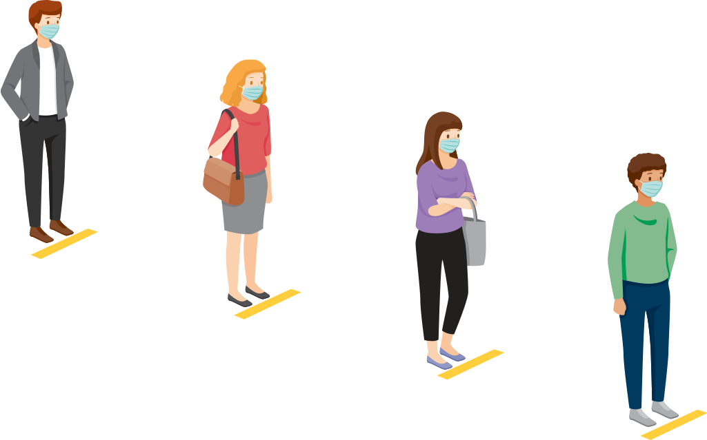

information about COVID-19?

 WEAR MASK
WEAR MASK
 WASH HANDS
WASH HANDS

SOCIAL
DISTANCING
| SYMPTOMS | SEVERITY | ADVICE |
|---|---|---|
| Fever | Mild | Drink plenty of fluids , especially water |
| Cold | Mild | Drink plenty of fluids , especially water |
| Cough | Mild | Drink plenty of fluids , especially water |
| Tiredness | Mild | Drink plenty of fluids , especially water |
COVID-19 is a disease caused by a virus called SARS-CoV-2. Most people with COVID-19 have mild symptoms, but some people can become severely ill. Although most people with COVID-19 get better within weeks of illness, some people experience post-COVID conditions. Post-COVID conditions are a wide range of new, returning, or ongoing health problems people can experience more than four weeks after first being infected with the virus that causes COVID-19. Older people and those who have certain underlying medical conditions are more likely to get severely ill from COVID-19. Vaccines against COVID-19 are safe and effective.
COVID-19 spreads when an infected person breathes out droplets and very small particles that contain the virus. These droplets and particles can be breathed in by other people or land on their eyes, noses, or mouth. In some circumstances, they may contaminate surfaces they touch. People who are closer than 6 feet from the infected person are most likely to get infected. COVID-19 is spread in three main ways:
Handwashing is one of the best ways to protect yourself and your family from getting sick. Wash your hands often with soap and water for at least 20 seconds, especially after blowing your nose, coughing, or sneezing; going to the bathroom; and before eating or preparing food. If soap and water are not readily available, use an alcohol-based hand sanitizer with at least 60% alcohol
People with COVID-19 have reported a wide range of symptoms – from mild symptoms to severe illness. Symptoms may appear 2-14 days after exposure to the virus. If you have fever, cough, or other symptoms, you might have COVID-19.
When a virus has one or more new mutations it’s called a variant of the original virus. Currently, there are two variants of major concern.